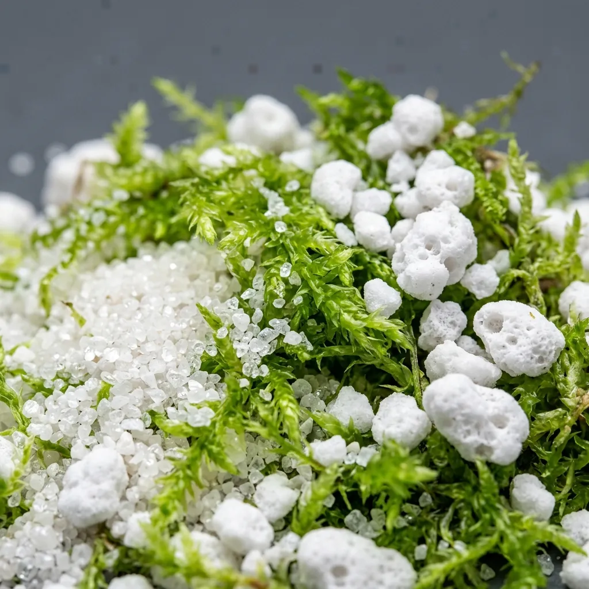

Zero-Nutrient Foundation Elements
While the anodised aluminium chassis protects the collection from atmospheric collapse, the substrate beneath is the invisible engine driving the health of a carnivorous terrarium. The root systems of these species are extraordinarily fragile, having evolved to absorb water and trace elements from highly degraded, acidic bogs. Introducing typical garden soil is lethal. We process and formulate foundations that are relentlessly pure, completely sterile, and entirely devoid of soluble minerals. Our strict manufacturing tolerances guarantee absolute chemical neutrality across all our aggregate blends, ensuring your investment is rooted in a predictably stable, uncontaminated medium that promotes aggressive pitcher formation and dense rhizome expansion.

Sterile Low-Nitrogen Substrates
Carnivorous plants have evolved to hunt precisely because their native soils are aggressively devoid of nutrients. Planting a Sundew or a Bladderwort in standard commercial potting soil is a rapid, fatal error, as the high nitrogen content will burn their fragile rhizomes in a matter of hours. We manufacture our substrates with absolute chemical sterility in mind. Our proprietary blends consist of washed, triple-baked silica quartz sand, imported long-fibre sphagnum moss, and horticultural-grade perlite. Before blending, every component is subjected to high-pressure steam sterilisation to eradicate latent fungal spores and mineral contaminants. The resulting foundation is chemically inert, providing the perfect acidic, low-nitrogen anchor that allows delicate capillary roots to establish without the risk of mineral burn or algal blooms.
The Pitcher Plant Drainage Layer
Maintaining high humidity without inducing catastrophic root rot requires aggressive, engineered drainage. For deeply potted Nepenthes species, water stagnation at the base of the terrarium rapidly cultivates anaerobic bacteria, a condition that will suffocate and destroy mature plants within weeks. To mitigate this structural risk, we provide a specialised, heavy-duty drainage aggregate.
This critical layer is composed of deeply porous, coarse volcanic pumice combined with heavily washed expanded clay aggregate. Installed as a strict two-inch false bottom beneath the primary growing medium, this highly aerated structure captures excess moisture runoff. It ensures the delicate roots are elevated above the water table while simultaneously allowing the captured liquid to evaporate back into the closed environment, thus sustaining the required ninety percent ambient humidity. This structural separation is non-negotiable for long-term botanical viability in a sealed enclosure.
Order Drainage AggregateSubstrate Hydration Protocols
Our long-fibre sphagnum and quartz blends are shipped completely dehydrated to maintain absolute sterility during transit. Improper rehydration will instantly compromise the chemical neutrality of the medium. Adhere strictly to the following protocols:
- Zero-TDS Liquid Only: Hydrate the dry material exclusively using reverse osmosis, distilled, or clean collected rainwater testing at zero Total Dissolved Solids.
- Avoid Municipal Supplies: Under no circumstances should you utilise municipal tap water. The heavy metals, calcium carbonates, and concentrated chlorine compounds will bind to the silica and poison the roots.
- Saturation Methodology: Submerge the dry block in a sterilised polyethylene basin for forty-five minutes. Do not forcefully compress the moss, as this shatters the cellular structure required for capillary wicking.
- Drainage Check: Lift the hydrated mass and allow gravity to clear excess water. The substrate must be damp to the touch but should not readily drip when lightly handled.
Bespoke Build Enquiries
While our standard transit cases and substrate formulations accommodate the vast majority of rare botanical collections, highly specific horticultural projects demand targeted engineering. We routinely fabricate containment systems with custom dimensions to fit precise architectural niches or to house exceptionally large, mature Nepenthes rajah specimens. Additionally, we provide commercial-scale bulk substrate blending for institutional conservatories.
To initiate a custom commission, please submit a comprehensive brief detailing your spatial constraints. Crucially, you must provide the exact species list you intend to cultivate. This data allows our thermodynamics team to pre-configure the peltier cooling curves, calibrate the photoperiod timers, and adjust the silica-to-sphagnum ratio before the unit is sealed and shipped from our facility. We approach every bespoke build with the same rigorous, uncompromising standards applied to our flagship hardware.
Submit Architectural Brief